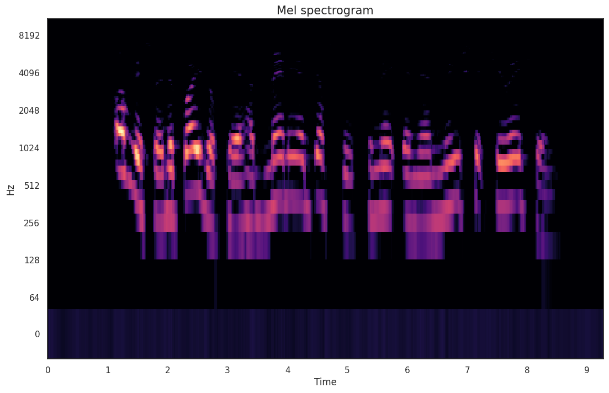
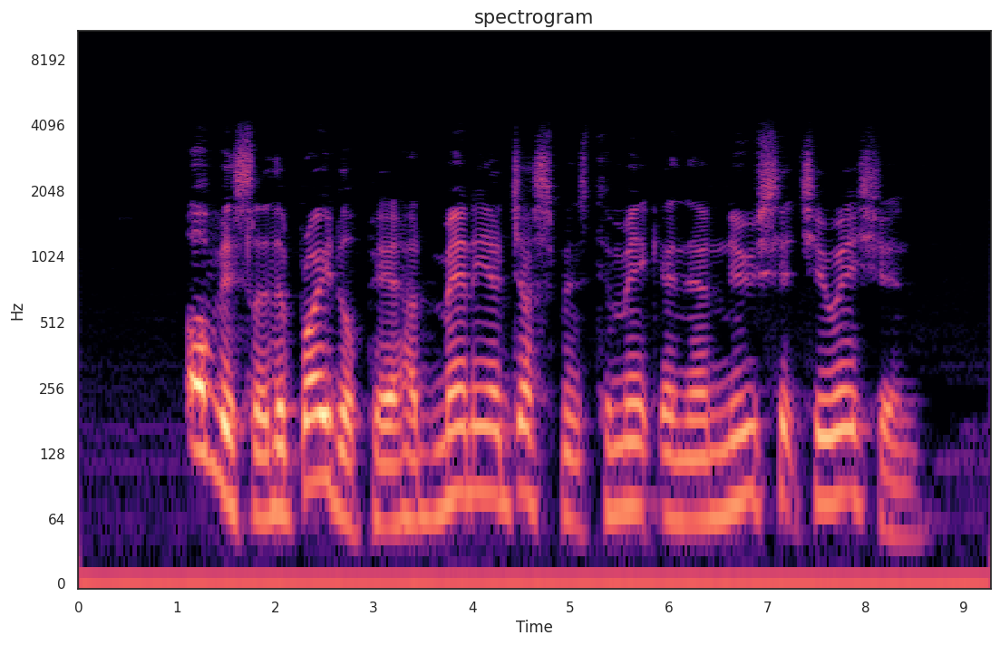
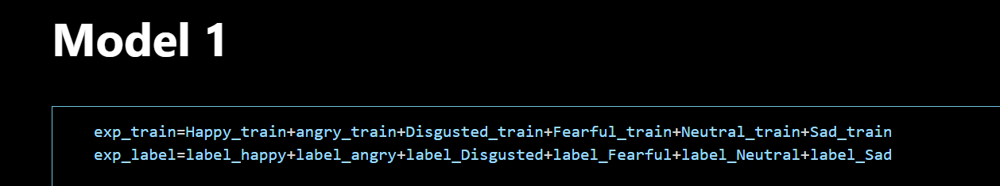
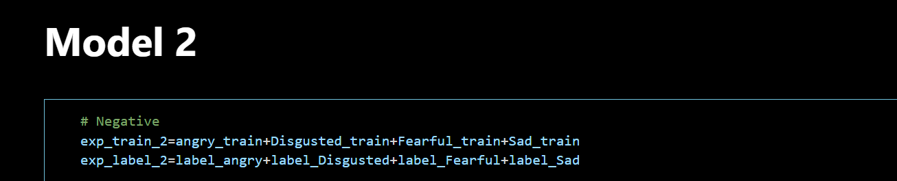
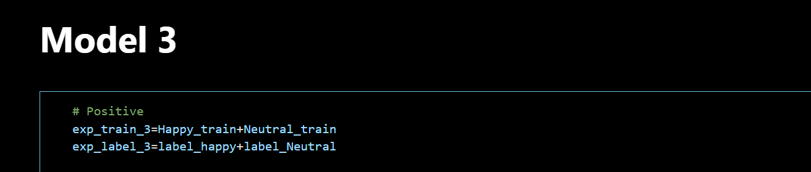
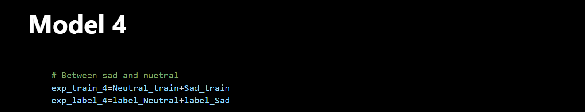
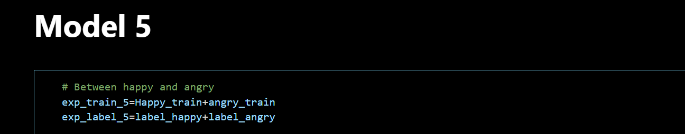
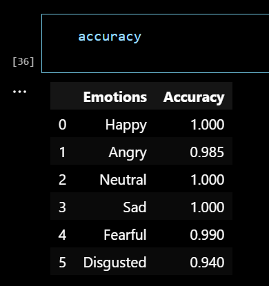
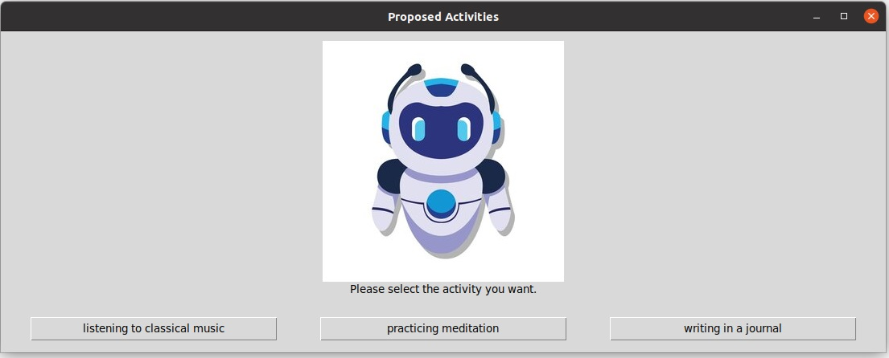

Speech Emotion Models
This is the second-to-last blog update, and this week's content revolves around the training of emotion models for speech and the overall assembly of the system. As mentioned at the beginning of the blog, our team aims to ensure a diverse range of emotional modalities based on the schedule. Currently, facial expressions and text have been completed. However, to achieve better results, we haven't abandoned training emotion models for speech and are still in progress. While it's highly likely that we can integrate speech into the final system, we cannot guarantee it.
Speech Emotion Models Architecture
 Due to the complex diversity of speech, this is a more challenging task. In speech emotion recognition, we transformed the task from audio to recognition based on structures like spectrogram and Mel spectrogram. Ultimately, we decided to use five models for iterative use. We switched the base model to a CNN architecture (initially using LSTM architecture showed less effective results in testing) to ensure a lightweight and efficient final model.
    As observed, different models handle different emotion tasks. The first three models address macro tasks, while the fourth model distinguishes between neutral and sad, and the fifth model distinguishes between happy and angry. The complexity of speech emotion recognition is handled through their collective invocation.
The calling logic for each model is as follows:
Firstly, the first emotion prediction of message (MSG) is carried out using model, and the emotion probability distribution is obtained. Then, depending on the prediction, branch into positive emotions or negative emotions. Within each branch, a different model is further used for secondary classification:
{Negative branch: Use model2 to determine disgust, fear, or sad.
Frontal branch: Use model3 to determine whether to be happy or neutral. }
On the basis of the results of the secondary classification, if it is not happy or neutral, it will further use model5 to make a more granular distinction:
[For the negative emotion branch, judge whether it is angry or happy;
For the positive branch of emotion, determine whether it is sad or neutral. ]
Through the combination of these layers of classification and multiple models, a concrete emotion label is finally determined and stored in the variable Final_pred.
Here are the accuracies for each model:
- Model 1 Accuracy: 0.8254688382148743
- Model 2 Accuracy: 0.5941483378410339
- Model 3 Accuracy: 0.896835446357727
- Model 4 Accuracy: 0.8965666890144348
- Model 5 Accuracy: 0.8703223466873169
However, the final result for the complete task, achieved through repeated invocation structures, is as follows: 
From this, it's evident that the final result on the dataset surpasses any individual model, even approaching near-perfect accuracy in some tasks (rounded to the nearest percent), demonstrating the advantage of this reuse structure.
System Assembly
To integrate existing facial recognition and text analysis models with the LLM section, we performed post-processing on the output. For expression recognition, we fixed the recognition of all expressions within 5 seconds and selected the most frequent result as the final label. Due to the difficulty of ensuring the recognition of any person's expression, especially in surprise and neutral results, we tied text and expression analysis detections and leaned more towards the text result.
Once a natural language emotion is obtained, it is input into the LLM section through this UI: 
Finally, with the assistance of LLM, API calls are made and subsequent operations are initiated.